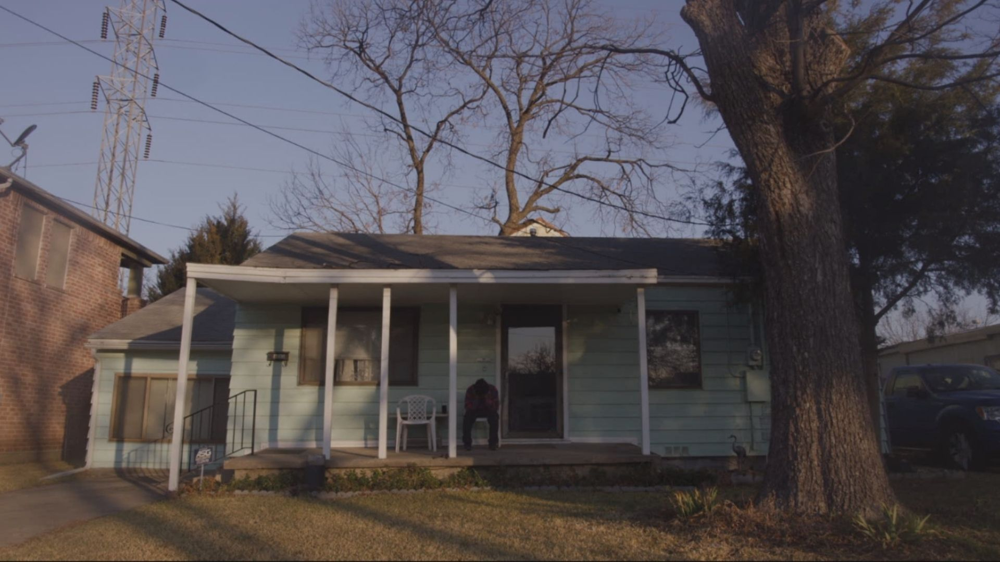
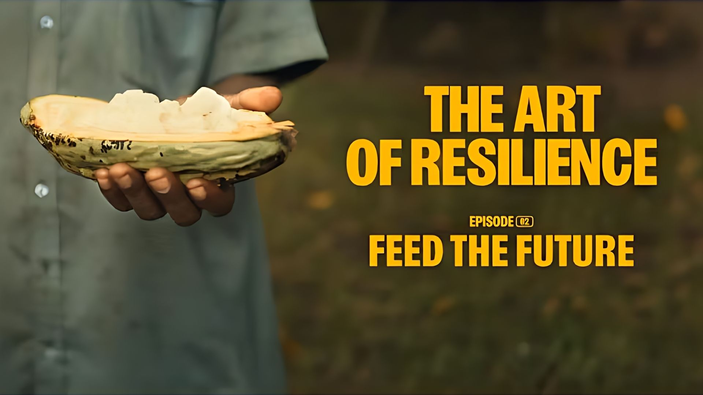
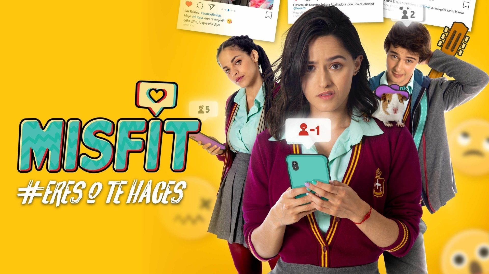

Caretaker
Rol: Re-recording mixer / Lead Sound Designer
Prod: Light & Noise
Dir: Veronica Wood
Portafolio / Investigación

Rol: Re-recording mixer / Lead Sound Designer
Prod: Light & Noise
Dir: Veronica Wood

Rol: Captación de sonido directo
Prod: Waterbear
Dir: Federico Urdaneta

Rol: SFX Editor
Prod: 2btube
Dir: Orlando Herrera
Con más de una década de experiencia creando narrativas sonoras para cine, publicidad y medios digitales, mi práctica profesional se fundamenta en la precisión técnica y la sensibilidad artística.
En el ámbito académico, compagino la industria con la docencia, formando a nuevas generaciones en Diseño Sonoro. Actualmente, mi investigación se sitúa en la intersección del audio y la tecnología, explorando cómo la Inteligencia Artificial está redefiniendo los límites de la creación y la postproducción audiovisual.
Rol Actual
Fundador y Director en:
Polígono Studio ↗